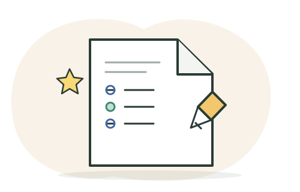

Consumo de sustancias
Decisiones informadas, presión de grupo y formas de buscar apoyo.
Ver juegos y actividades →Practica por áreas en una página dedicada. Lee cada situación con calma, conversa tus ideas y revisa la explicación al responder.

Explora las campañas, los juegos y recursos para proyecto de vida e ICFES.
Decisiones informadas, presión de grupo y formas de buscar apoyo.
Ver juegos y actividades →Reconocer señales y conectar con ayuda segura.
Ver juegos y actividades →Límites, consentimiento, seguridad digital y redes de apoyo.
Ver juegos y actividades →Reúne ideas, apoyos y pasos hacia una meta.
Jugar en equipo →Resuelve retos y conoce áreas de estudio.
Explorar el campus →Interpreta pistas sobre metas y habilidades.
Descifrar mensajes →Preguntas de selección múltiple basadas en situaciones, textos y datos. El grupo debe interpretar, comparar o resolver antes de elegir; después verá la explicación.
Revisa las preguntas y sus opciones antes de empezar. Las respuestas se muestran después de cada intento. La IA puede equivocarse.
Ejercicio educativo, no oficial. Sin iniciar sesión, tus respuestas no se guardan; con cuenta, se registra el resultado para seguir tu progreso. Practica también con ejemplos oficiales explicados por el ICFES →
Organiza tu preparación por áreas y revisa siempre la información publicada por el ICFES.
Consulta la estructura, componentes y recomendaciones oficiales del examen.
Abrir guía ICFES ↗Escoge dos áreas, practica un bloque corto de cada una y reserva un momento para revisar errores y explicar cómo los corregiste.
Actividad · 30 minutosPor cada pregunta difícil, anota el tema, qué pensaste, qué evidencia faltó y qué estrategia probarás la próxima vez.
Plantilla de estudioConsulta conceptos o estrategias de las cinco áreas. Recibirás una explicación breve paso a paso.
Elige un espacio y continúa a tu ritmo. Puedes volver aquí cuando quieras.
Define metas y crea pasos posibles para avanzar.
Crear mi ruta →Opciones de estudioExplora intereses, instituciones, programas y financiación.
Explorar opciones →Catálogo de CórdobaBusca entre 578 programas por municipio, institución, nivel y estado.
Abrir catálogo de carreras →Preparación Saber 11Practica por áreas y revisa explicaciones de tus respuestas.
Empezar práctica →Profesiones e ideasConoce sectores y prueba una idea para mejorar tu entorno.
Conocer y crear →Aprende haciendoPractica tecnología, seguridad y pensamiento crítico.
Ver retos →Práctica interactivaAprende vocabulario para hablar de estudio y futuro.
Empezar práctica →En equipoRetos de futuro, decisiones, campus y habilidades.
Ver juegos →Retos existentes para aprender en equipo y explorar decisiones.
Reúne ideas, apoyos y pasos hacia una meta.
Jugar en equipo →Resuelve retos y conoce áreas de estudio.
Explorar el campus →Interpreta pistas sobre metas y habilidades.
Descifrar mensajes →Practica lectura, matemáticas, sociales, ciencias e inglés.
Ir al simulacro →Historias ficticias para mostrar que hay distintos caminos después del colegio.
“Me gustaban los computadores, pero no sabía qué estudiar. Hablé con un profesor, probé un curso corto y luego comparé programas técnicos y tecnológicos.”Una ruta posible · tecnología
“Quería ayudar a otras personas. Investigué opciones de salud, pregunté por requisitos y organicé un plan para prepararme mientras terminaba el colegio.”Una ruta posible · salud
“No tenía claro mi futuro. Empecé por una meta cercana: mejorar en una materia y conocer a alguien que trabajara en un área que me llamaba la atención.”Una ruta posible · explorar primero
Material de YouTube sobre preparación Saber 11 e ICFES.
Cargando videos del módulo…
Los resultados vienen de YouTube. El docente debe revisar cada video antes de proyectarlo en el salón.